Frame and Drain Tube Replacement
Frame and Drain Tube ReplacementSRS components are located in this area. Review the SRS component locations and the precautions and procedures before doing repairs or service.
2-door
1. Remove these items:
- Headliner
- Moonroof glass
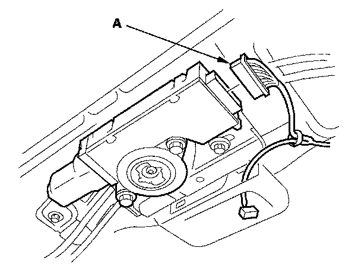
2. Put on gloves to protect your hands. Disconnect the motor connector (A).
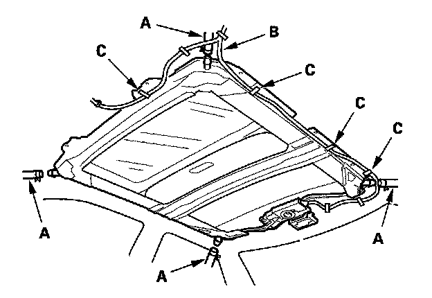
3. Disconnect the drain tubes (A).
4. Remove the roof wire harness (B) by detaching the harness clips (C).
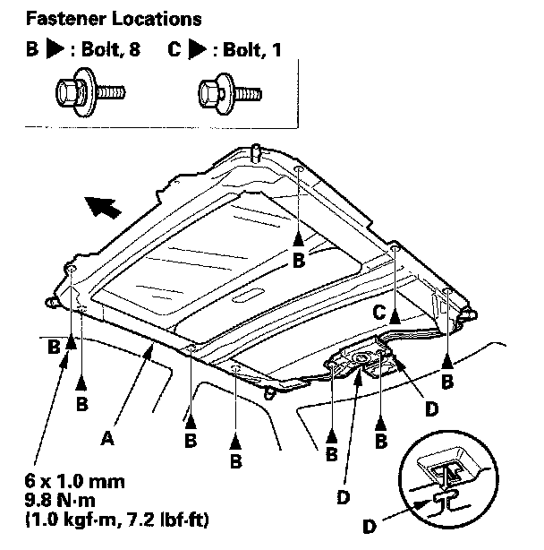
5. With an assistant holding the frame (A), remove the bolts (B, C), starting at the rear, and release the rear hooks (D) by moving the frame forward.
6. With the help of an assistant, carefully remove the frame through the front door opening. Take care not to scratch the interior trim and body, or tear the seat covers.
7. To remove a front drain valve (A) from the body, remove these parts:
- Kick panel, left or right
- Driver's dashboard undercover or passenger's dashboard undercover
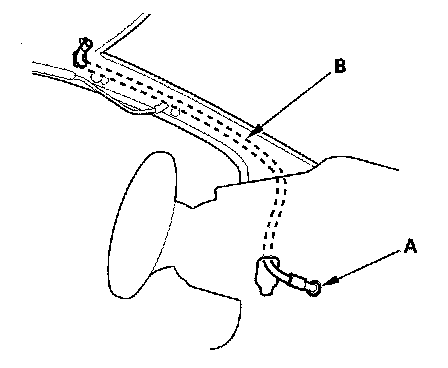
Tie a string to the top end of the drain tube, then pull the front drain tube (B) down out of the A-pillar. Leave the string in the pillar to use when reinstalling the drain tube.
8. To remove a rear drain valve (A) from the body, remove these parts:
- Spare tire lid
- Trunk rear trim panel
- Trunk side trim panel
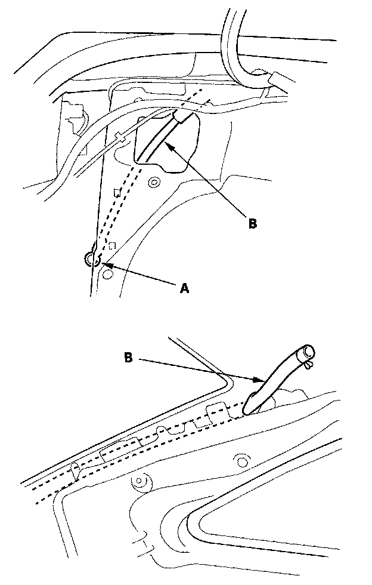
Tie a string to the top end of the rear drain tube (B), then pull the drain tube down out of the pillar.
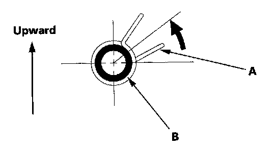
9. Install the frame and drain tube in the reverse order of removal, and note these items:
- Before installing the frame, clear the drain tubes and drain valves using compressed air.
- When installing, tie a string to the top end of the new drain tube and pull it up into the roof.
- Check the frame seal.
- Clean the surface of the frame.
- When installing the frame, first attach the rear hooks into the body holes.
- Make sure the connectors are plugged in properly.
- When connecting the drain tube, slide it over the frame nozzle at least 10 mm (0.39 in.).
- Install the tube clip (A) on the drain tube (B) as shown.
10. Check for water leaks. Let the water run freely from a hose without a nozzle. Do not use a high-pressure spray.
SRS components are located in this area. Review the SRS component locations and the precautions and procedures before doing repairs or service.
4-door
1. Remove these items:
- Headliner
- Moonroof glass
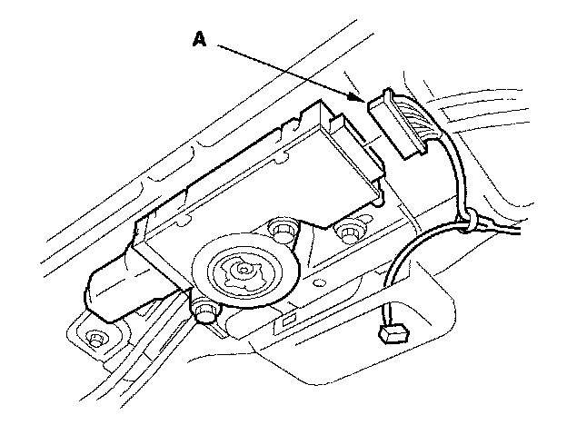
2. Put on gloves to protect your hands. Disconnect the motor connector (A).
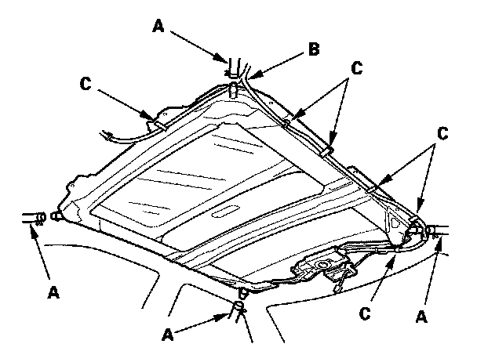
3. Disconnect the drain tubes (A).
4. Remove the roof wire harness (B) by detaching the harness clips (C).
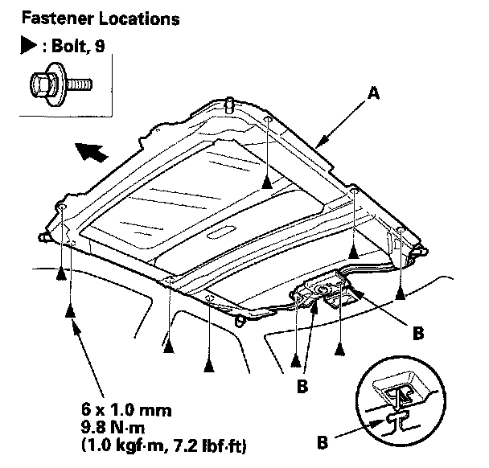
5. With an assistant holding the frame (A), remove the bolts, starting at the rear, and release the rear hooks (B) by moving the frame forward.
6. With the help of an assistant, carefully remove the frame through the front door opening. Take care not to scratch the interior trim and body, or tear the seat covers.
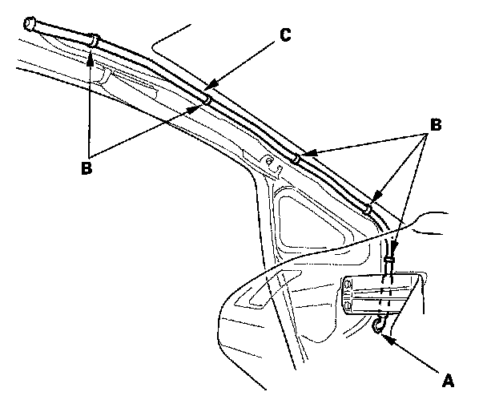
7. To remove a front drain valve (A) from the body, remove the kick panel, left or right, and the driver's dashboard undercover or passenger's dashboard undercover.
Detach the clips (B), then remove the front drain tube (C).
8. To remove a rear drain valve (A) from the body, remove these parts:
- Spare tire lid
- Trunk rear trim panel
- Trunk side trim panel
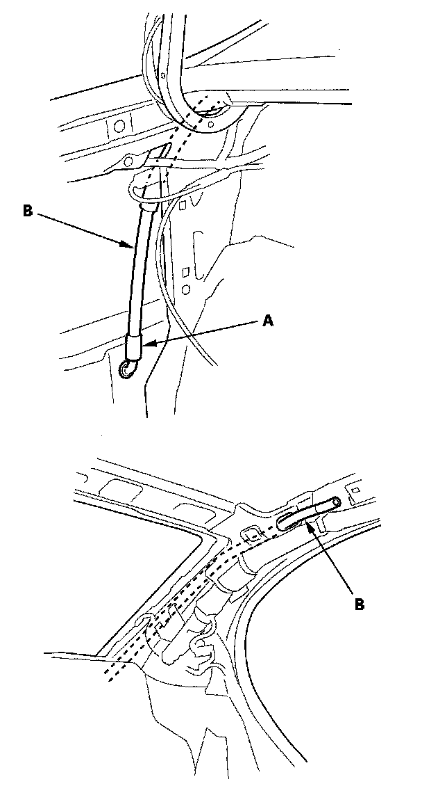
Tie a string to the top end of the rear drain tube (B), then pull the drain tube down out of the pillar.
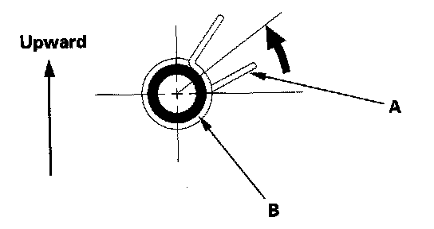
9. Install the frame and drain tube in the reverse order of removal, and note these items:
- Before installing the frame, clear the drain tubes and drain valves using compressed air.
- When installing, tie a string to the top end of the new drain tube and pull it up into the roof.
- Check the frame seal.
- Clean the surface of the frame.
- When installing the frame, first attach the rear hooks into the body holes.
- Make sure the connectors are plugged in properly.
- When connecting the drain tube, slide it over the frame nozzle at least 10 mm (0.39 in.).
- Install the tube clip (A) on the drain tube (B) as shown.
10. Check for water leaks. Let the water run freely from a hose without a nozzle. Do not use a high-pressure spray.